I am Nahid Hossain, currently serving as an Assistant Professor and Program Coordinator in the Computer Science and Engineering (CSE) department at United International University (UIU), Bangladesh. Prior to this, I held the position of Lecturer in the same department. Before joining UIU, I worked as a Software Engineer in the AI Division at eGeneration Ltd, Bangladesh. I hold a Master's and a Bachelor's degree in CSE.
My research primarily focuses on Natural Language Processing (NLP) and Deep Learning, specifically in Language Understanding & Generation, Language Technology & Resources, and Large Language Models.
I am a first-generation student born and raised in rural Bangladesh. I moved to the capital in 2012 to pursue higher studies. I identify as a heterosexual, cisgender male (he/him) and believe in treating everyone with respect, regardless of their sexual orientation, gender, or any other aspect of their identity.
| [J4]. | 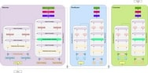 | Mehedi Hasan Bijoy*, Nahid Hossain*, Salekul Islam, Swakkhar Shatabda, Volume 89, Computer Speech and Language, ISSN 0885-2308, Elsevier, 2025, https://doi.org/10.1016/j.csl.2024.101703 [Q1 - Impact factor: 3.1, CiteScore: 11.3, , Indexed by Scopus and others.] | |
| [J3]. | 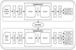 | Nahid Hossain, Mehedi Hasan Bijoy, Salekul Islam, Swakkhar Shatabda, Neural Computing and Applications (NCAA), Springer Nature, https://doi.org/10.1007/s00521-023-09211-7 2023 [Q1 - Impact Factor: 4.7, CiteScore: 11.4, Indexed by Scopus and others. Publisher: Springer Nature] | |
| [J2]. | 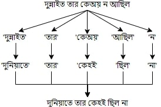 | Nahid Hossain, Hafizur Rahman Milon, Sheikh Nasir Uddin Sabbir, Azfar Inan, in Bulletin of Electrical Engineering and Informatics, vol.11(1), 396–404, ISSN:2089-3191E-ISSN:2302-9285, 2022, doi:10.11591/eei.v11i1.3237 [Q3 - CiteScore: 3.6, Indexed by Scopus and others, Publisher: IAES] | |
| [J1]. | 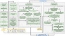 | Nahid Hossain, Salekul Islam, Mohammad Nurul Huda, in IEEE Access, vol. 9, pp. 141079-141097, ISSN:2169-3536, 2021, doi: 10.1109/ACCESS.2021.3119627 [Q1 - Impact Factor: 3.9, CiteScore: 9.8, Indexed by Scopus and others. Publisher: IEEE] | |
| [C8]. | 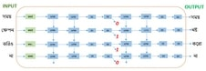 | Nahid Hossain and Adil Ahnaf, 2021 International Conference on Intelligent Technology, System and Service for Internet of Everything(ITSS-IoE 2021), 2021, pp. 1-5, doi: 10.1109/ITSS-IoE53029.2021.9615303. Sanna, Yemen [Publisher: IEEE] | |
| [C7]. | 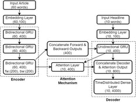 | Ruhul Amin*, Nabila Sabrin Sworna*, Md Nazmul Khan Liton and Nahid Hossain*, 2021 International Conference on Science & Contemporary Technologies (ICSCT), 2021, pp. 1-5, doi: 10.1109/ICSCT53883.2021.9642642.[Publisher: IEEE] | |
| [C6]. | Md Pavel Rahman*, A.K.M Ifranul Hoque*, Md. Faysal Ahmed, Iftekhirul, Ashraful Alam and Nahid Hossain*, 2021 International Conference on Software Engineering & Computer Systems and 4th International Conference on Computational Science and Information Management (ICSECS-ICOCSIM), Pahang, Malaysia, 2021, pp. 453-458, doi: 10.1109/ICSECS52883.2021.00089. [Publisher: IEEE] | ||
| [C5]. | 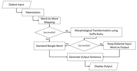 | Hafizur Rahman Milon, Sheikh Nasir Uddin Sabbir, Azfar Inan, and Nahid Hossain, 2020 IEEE Region 10 Symposium (TENSYMP), Dhaka, Bangladesh, 2020, pp. 214- 217, doi: 10.1109/TENSYMP50017.2020.9230714. [Publisher: IEEE] | |
| [C4]. | 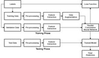 | Ruhul Amin, Nabila Sabrin Sworna, and Nahid Hossain, 2020 IEEE Region 10 Symposium (TENSYMP), Dhaka, Bangladesh, 2020, pp. 174-177, doi: 10.1109/TENSYMP50017.2020.9230981. [Publisher: IEEE] | |
| [C3]. | 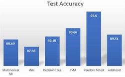 | Ruhul Amin, Md. Moshiur Rahman, and Nahid Hossain, 2019 3rd International Conference on Electrical, Computer & Telecommunication Engineering (ICECTE), Rajshahi, Bangladesh, 2019, pp. 169-172, doi: 10.1109/ICECTE48615.2019.9303525. [Publisher: IEEE] | |
| [C2]. | 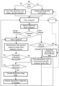 | Md. Moshiur Rahman, Ruhul Amin, Md Nazmul Khan Liton and Nahid Hossain, 2019 22nd International Conference on Computer and Information Technology (ICCIT), Dhaka, Bangladesh, 2019, pp. 1-6, doi: 10.1109/ICCIT48885.2019.9038579. [Publisher: IEEE] | |
| [C1]. | 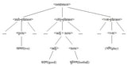 | Nahid Hossain and Mohammad Nurul Huda, 2018 21st International Conference of Computer and Information Technology (ICCIT), Dhaka, Bangladesh, 2018, pp. 1-5. doi:10.1109/ICCITECHN.2018.8631961 [Publisher: IEEE] |